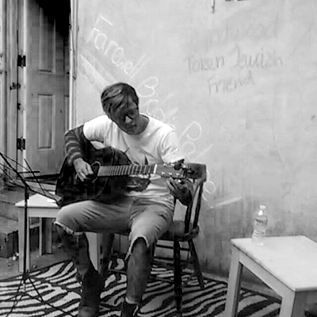

About
What is Jacob Evan?
Jacob Evan is my solo side project. The concept is much more stripped down than my other musical endeavors, and has a focus on writing independent rock and punk music.
The project started as an acoustic "folk punk" band called Token Jewish Friend, which eventually grew into a two piece emo band with Tyler Kramer of Twin Sister. Token Jewish Friend played a few house shows, and the Milford Music Festival.
Tyler and I split due to scheduling issues, causing some major changes in sound, and identity. The project eventually became known as Friends Back East, a reference to Jawbreaker's Dear You. I recruited Jay Bell of Paper Machines, and Jimmy Fox of (the now defunct) Brekenridge. But due to traveling and distance issues, the band had to undergo more changes yet again.
The next iteration of the project, Silkweaver, was a full band emo/post-hardcore band. Not much was actually played live, but the pieces I uploaded to soundcloud would eventually be discovered by the record label I'm currently working with, Know Hope Records
here is an early ep from the silkweaver days
fun fact: on this EP is an early version of the song Stolen Flame, which would be eventually featured on the current EP
Eventually I became discouraged with the project, and took time to focus on school. This was about the same time that I realized the ADHD medication I was perscribed was a catalyst for depressive states I would go through. Eventually, they began to spawn the current Jacob Evan EP. The EP would be a cumulative history of the past year, and display my struggle in dealing with my identity, as well as my ADHD and depression, and put my current state of being into full view for everyone. The final name change came from Damon Albarn, who spent years hiding behind the monikers of Blur and The Gorillaz, before eventually putting work out under his own name. The video featured below, is a show I played before the initial release of the EP, while also working alongside the label. Thank you for reading, and I hope you enjoy this live performance!